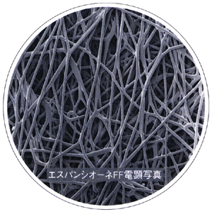
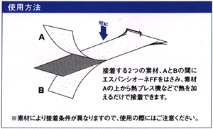

 |
優れた機能を備えたポリウレタン不織布として、定評のあるエスパンシオーネ。KBセーレンは、このエスパンシオーネの技術をさらに発展させ、接着性ウレタン不織布エスパンシオーネFFを開発しました。環境にやさしい無溶媒のホットメルトを採用しているので、作業効率に優れています。また、接着後も伸縮性を持続するなど数々の特性を備えているため、幅広いニーズに対応します。 |
熱を加えるだけで
接着します |
接着する素材の間にはさみ、熱プレス機やアイロンで加熱押圧するだけで、※ホットメルト樹脂が作用して、素材どうしをしっかりと接着します。乾燥時間も不要で作業性に優れているうえ、衛生的です。さらに、フィルムタイプと比べ、柔軟性や通気性にも優れています。
※融けやすく硬化が早いホットメルト性:流動開始温度 低融点タイプ UEO 105±5℃、高融点タイプ EDH 135±5℃ |
接着後も伸縮性や
通気性を保ちます |
エスパンシオーネの製造技術を応用して開発された、エスパンシオーネFF。伸縮・通気・透湿性などエスパンシオーネの特性を活かしながら素材どうしを接着し、接着後にもその機能を維持します。 |
| 耐光性に優れています |
エスパンシオーネのポリマーの改質や生産工程の改良により、トップクラスの耐光性を実現。太陽光による黄変もほとんどありません。また、汗による変質もなく、洗濯性やドライクリーニング性にも優れ、伸縮性などの機能を損ないません。 |
多種多様な素材に
対応します |
従来のホットメルト不織布を使用した接着剤は、接着できる素材が限られていました。これに対し、独自の技術開発によるウレタン不織布を使用したエスパンシオーネFFは、天然繊維・合成繊維・各種合成樹脂・木材・紙・人口皮革など広範囲の素材に接着性を発揮します。また、防水透湿シートと合織生地など、異素材どうしの接着も可能です。 |
素材の風合いを
損ないません |
柔軟性に富んでいるため、接着する素材それぞれの風合いを活かして接着します。接着後も柔軟性を保つため、幅広い素材にフレキシブルに対応します。また、新しい用途への展開も期待できます。 |
環境や人にやさしい
接着材です |
環境や人に配慮した無溶媒タイプの接着材です。換気の必要もなく、安心して作業ができます。加熱プレスするだけで接着性を発揮するので、省エネ面でも効果的。溶媒系接着剤に代わる、環境や人にやさしいこれからの接着材です。 |
標準規格品 |
| タイプ |
UEO |
EDH |
| 目付重量 |
25g,50g,75g,100(/m2) |
| 有効幅 |
1,200mm・1,500mm |
| 巻数量 |
500m/ロール〜 |
| 標準規格品以外についてもご相談ください。 |
|
他社素材、他素材との比較（優位性） |
| (1) |
他の熱接着性不織布に比し、接着後も柔軟性が保持でき、特に伸縮素材どうしの貼り合せでは貼り合せた後もその伸縮性が保てる。 |
| (2) |
フィルムタイプと比べ、柔軟性や通気性で優れる。 |
| (3) |
溶媒系接着に比し、作業環境に優しく、使い残しも問題にならない。 |
| (4) |
アイロンや熱プレス機で簡単に接着可能。
| 流動開始温度： |
低融点タイプ |
105±5℃ |
| |
高融点タイプ |
135±5℃ |
|
|
用途展開 |
| 各種素材の接着及び貼り合せ。 |
| (1) |
スポーツウエアやレインコートなどの透湿性フィルムの接着。 |
| (2) |
衣服の接着芯地、ワッペンマーク、靴・カバン、包装材、壁材・床材、インテリア、自動車内装材、電化製品等様々な分野での展開可能。 |
|
使用方法 |
接着する2つの素材、AとBの間にエスパンシオーネFFをはさみ、素材Aの上から熱プレス機などで熱を加えるだけで接着できます。

※素材により接着条件が異なりますので、使用の際にはご注意下さい。 |
取扱い注意点 |
| 接着及び貼り合せする場合、被接着物に合った接着及び貼り合せ条件（温度、圧力)の設定が必要。 |
| 耐薬品性 |
1. |
濃酸･濃アルカリにより、ナイロンと同程度の劣化を示す。 |
| 2. |
塩素系の漂白剤により劣化する。 |
| 3. |
ジメチルホルムアミド、テトラハイドロフラン、メチルエチルケトンなどの溶剤に溶ける。 |
|